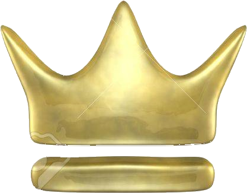

Touhou 6, Embodiment of Scarlet Devil
Touhou 8, Imperishable Night
Touhou 12.8, Fairy Wars
Touhou 13, Ten Desires
| Album Cover | Details | |
|---|---|---|
|
Original Albumtitle: | BEGIERDE DES ZAUBERER |
| Translated Albumtitle: | Desire of the Magician | |
| Release Date: | December 30, 2011 at Winter Comiket 81 | |
| Release Price: | First Release: 1260 JPY | |
| Catalog Number: | DECD-0007 | |
| Music Source: |
Touhou 5, Mystic Square Touhou 6, Embodiment of Scarlet Devil Touhou 8, Imperishable Night Touhou 12.8, Fairy Wars Touhou 13, Ten Desires |
|
| Notes: | Sixth Full-Album Release | |
| Tracklist | ||||
|---|---|---|---|---|
| N° | Track Title | Translated Title | Original Music Source | Duration |
| 01 | 欲深き霊魂 ～ Introduction | Spirit of Avarice ~ Introduction | same as Track Title | 03:01 |
| 02 | プラスチックマインド ～ Alice in Underground | Plastic Mind ~ Alice in Underground | same as Track Title | 06:22 |
| 03 | リジッドパラダイス ～ Dawn of the Dead | Rigid Paradise ~ Dawn of the Dead | same as Track Title | 05:53 |
| 04 | 恋色マスタースパーク ～ Final Sorcery | Love-colored Master Spark ~ Final Sorcery | same as Track Title | 04:24 |
| 05 | U.N. オーエンは彼女なのか？ | U.N. Owen was Her? | same as Track Title | 04:53 |
| 06 | メイガスナイト ～ Frenzy Night | Magus Night ~ Frenzy Night | same as Track Title | 05:03 |
| 07 | デザイアドライブ ～ Desire Dream | Desire Drive ~ Desire Dream | same as Track Title | 06:46 |
| 08 | Endless ~ The Endless Deadly Sins | - | same as Track Title | 01:25 |
| 09 | Strawberry Crisis !!!!!! | - | same as Track Title | 03:42 |
After a rather quiet year of 2010, Demetori decided to reprint some of their old albums and released them in 2011 and dropped their newest album,
BEGIERDE DES ZAUBERER, the very same year. The album features older and newer Touhou entries alike with more methodical
compositions yet tracks such as Desire Drive deliver the level of depth that just sounds so Demetori'ish that people can't help but proclaim
that Demetori has returned with all its glory. Demetori is still here and will continue to be. A life's worth of eargasms is yet to run out.
Site Admin's Recommended Tracks:
 Desire Drive ~ Desire Dream
Desire Drive ~ Desire Dream
 Rigid Paradise ~ Dawn of the Dead
Rigid Paradise ~ Dawn of the Dead
Love-colored Master Spark ~ Final Sorcery
| Featured Full Album | Featured Fan Cover |
|---|---|